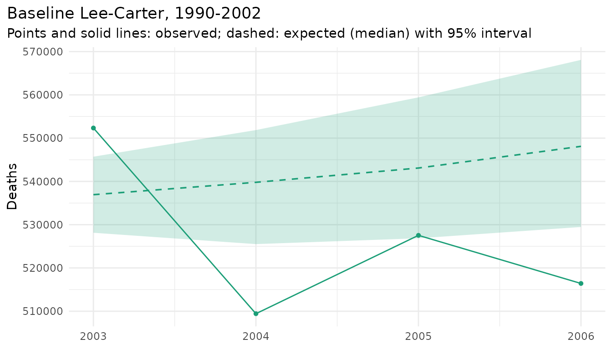
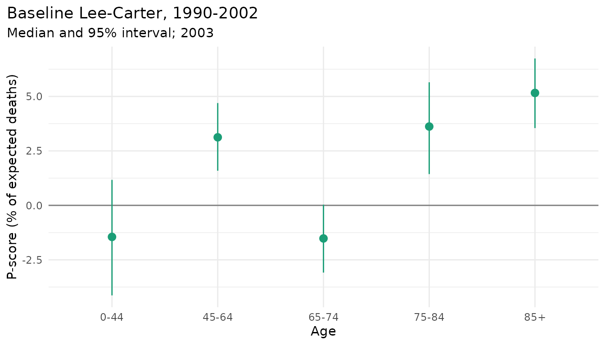
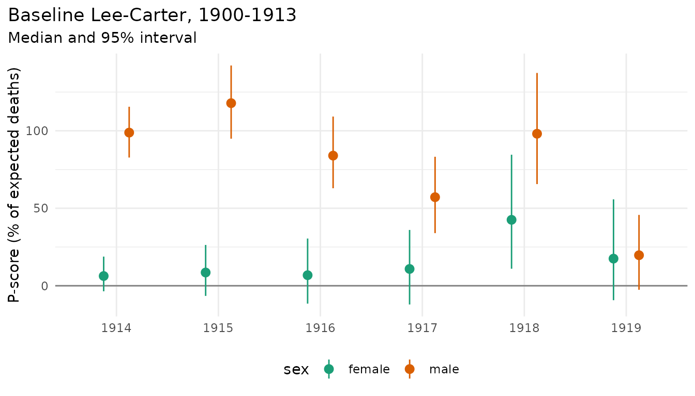
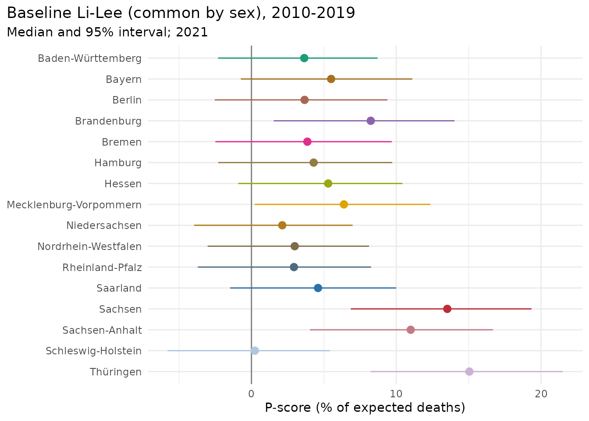

Excess deaths are the deaths observed in a period of crisis (a
heatwave, an epidemic, a war) minus the deaths expected without it. The
expected deaths are not observed; they come from a model of the years
before the crisis, the baseline. mt_excess() fits
any mortality model of the package to the baseline years, forecasts the
later years with the observed exposures, and compares the observed
deaths with each simulated path of expected deaths. The intervals
therefore contain the uncertainty of the baseline trend and the random
variation of the death counts: they are prediction intervals for the
realised excess under the baseline model. The WHO estimates of the
excess mortality of the COVID-19 pandemic follow this approach with
their own baseline model (Msemburi et al. 2023).
The results are
- the excess: observed minus expected deaths;
- the P-score: the excess in percent of the expected deaths;
-
p_positive: the share of paths in which the observed deaths exceed the expected deaths;
by year, and optionally by age group, stratum, and summed over years.
The heatwave of August 2003 in France
Deaths and exposures of France (Human Mortality Database, via the demography package), single years of age to 100+. The baseline is a Lee-Carter model of the years 1990-2002:
library(mortensor)
library(data.table)
fr <- as_mt_data(demography::fr.mort)
x <- mt_regroup(mt_subset(fr, periods = c(1990, 2006)), age = 0:100)
fit <- mt_fit(lee_carter(), mt_subset(x, periods = c(1990, 2002)))
ex <- mt_excess(fit, x, by = character(), seed = 1)
ex[, list(period, observed, expected_q0.5, excess_q0.025, excess_q0.5, excess_q0.975, p_score_q0.5)]
#> period observed expected_q0.5 excess_q0.025 excess_q0.5 excess_q0.975
#> <num> <num> <num> <num> <num> <num>
#> 1: 2003 552339 536931.5 6624.225 15407.5 24207.650
#> 2: 2004 509429 539789.0 -42437.625 -30360.0 -16082.050
#> 3: 2005 527535 543092.0 -31888.450 -15557.0 682.875
#> 4: 2006 516416 548104.5 -51667.575 -31688.5 -13050.350
#> p_score_q0.5
#> <num>
#> 1: 2.869547
#> 2: -5.624420
#> 3: -2.864524
#> 4: -5.781471by = character() sums women and men. In 2003, about
15,000 more people died than expected (95% interval 6,600 to 24,200),
2.9% more than expected. Fouillet et al. (2006) counted about 15,000
excess deaths between 1 and 20 August 2003 against the mortality of
2000-2002, so the rest of the year was close to the baseline.
mt_plot_excess(ex)
The years after 2003 lie below the baseline: 30,000 fewer deaths than expected in 2004 and as many in 2006. Part of the deficit of 2004 may be deaths brought forward by the heatwave, but the deficit continues: from 2003 mortality fell faster than the trend of 1990-2002. A baseline extrapolated over several years becomes uncertain, and so do excess deaths far from the baseline period.
By sex and age group:
mt_excess(fit, x, periods = 2003, seed = 1)[, list(sex, observed, excess_q0.025, excess_q0.5, excess_q0.975)]
#> sex observed excess_q0.025 excess_q0.5 excess_q0.975
#> <char> <num> <num> <num> <num>
#> 1: female 273315 3662.975 11716.5 18782.100
#> 2: male 279024 -423.375 3877.5 8718.475
ex_age <- mt_excess(fit, x, periods = 2003, by = character(), ages = c(0, 45, 65, 75, 85), seed = 1)
ex_age[, list(age, observed, excess_q0.5, p_score_q0.025, p_score_q0.5, p_score_q0.975)]
#> age observed excess_q0.5 p_score_q0.025 p_score_q0.5 p_score_q0.975
#> <char> <num> <num> <num> <num> <num>
#> 1: 0-44 29115 -428.0 -4.132683 -1.448736 1.16936356
#> 2: 45-64 81495 2469.0 1.589854 3.124288 4.69657168
#> 3: 65-74 89304 -1377.0 -3.085393 -1.518510 0.03105528
#> 4: 75-84 167633 5854.5 1.435597 3.618837 5.64991291
#> 5: 85+ 184792 9069.0 3.547467 5.160964 6.74166633
mt_plot_excess(ex_age, type = "p_score")
Three quarters of the excess were women, and most were 75 and older;
the P-score was highest at 85+. Fouillet et al. (2006) also found the
excess concentrated among women and at old ages. ages gives
the start of each age group; the deaths are summed path by path before
the quantiles are taken.
The same comparison on the scale of life expectancy: the observed life expectancy at birth minus that of each path of expected rates.
le <- mt_excess(fit, x, periods = 2003, quantity = "life_expectancy", seed = 1)
le[, list(sex, observed, expected_q0.5, excess_q0.025, excess_q0.5, excess_q0.975)]
#> sex observed expected_q0.5 excess_q0.025 excess_q0.5 excess_q0.975
#> <char> <num> <num> <num> <num> <num>
#> 1: female 82.95594 83.20438 -0.5308777 -0.2484383 0.08556622
#> 2: male 75.87930 76.01581 -0.3704429 -0.1365119 0.07779665Life expectancy of women was 0.25 years lower than expected; the interval includes zero, because an annual life expectancy hides a shock of two weeks.
The choice of baseline
The baseline is an assumption. A few alternatives, each fitted to the years before 2003:
base <- list("Lee-Carter 1990-2002" = fit,
"Lee-Carter 1993-2002" = mt_fit(lee_carter(), mt_subset(x, periods = c(1993, 2002))),
"random walk 1990-2002" = mt_fit(rwd(), mt_subset(x, periods = c(1990, 2002))),
"Li-Lee 1990-2002" = mt_fit(li_lee(), mt_subset(x, periods = c(1990, 2002))))
rbindlist(lapply(names(base), function(b) {
mt_excess(base[[b]], x, periods = 2003, by = character(), seed = 1)[, baseline := b]
}))[, list(baseline, excess_q0.025, excess_q0.5, excess_q0.975, p_score_q0.5)]
#> baseline excess_q0.025 excess_q0.5 excess_q0.975 p_score_q0.5
#> <char> <num> <num> <num> <num>
#> 1: Lee-Carter 1990-2002 6560.475 15558.00 23824.10 2.898389
#> 2: Lee-Carter 1993-2002 6841.425 15558.50 23485.87 2.898485
#> 3: random walk 1990-2002 6604.257 15194.38 26120.47 2.828732
#> 4: Li-Lee 1990-2002 174.350 14839.00 28411.90 2.760744The medians agree within 800 deaths. Li-Lee, whose common factor ties the trends of women and men together, gives the widest interval of the sum: when the trend errors of the parts are correlated, they do not cancel in the total. Report the baseline model and years with the results, and compare a few.
A large shock: France 1918
The influenza pandemic of 1918 against a baseline of 1900-1913 (ages 0-94 and 95+, because some exposures at the oldest ages are zero in these years):
y <- mt_regroup(mt_subset(fr, periods = c(1900, 1919)), age = 0:95)
e18 <- mt_excess(lee_carter(), y, baseline = c(1900, 1913), seed = 1)
e18[, list(sex, period, excess_q0.025, excess_q0.5, excess_q0.975, p_score_q0.5)]
#> sex period excess_q0.025 excess_q0.5 excess_q0.975 p_score_q0.5
#> <char> <num> <num> <num> <num> <num>
#> 1: female 1914 -11344.650 17967.5 47219.97 6.358185
#> 2: female 1915 -21425.050 24139.5 62661.12 8.714857
#> 3: female 1916 -36893.200 17593.0 66988.12 6.538593
#> 4: female 1917 -38849.175 29459.5 77968.68 11.209280
#> 5: female 1918 37376.625 112934.5 173221.62 42.766475
#> 6: female 1919 -30836.325 45057.5 109011.72 17.291865
#> 7: male 1914 279363.850 305607.0 328975.65 98.789724
#> 8: male 1915 318055.825 352372.0 381504.15 118.155237
#> 9: male 1916 201987.600 239766.5 274307.60 84.025849
#> 10: male 1917 114019.325 159651.0 198354.65 57.254799
#> 11: male 1918 221010.225 276639.0 322274.52 98.633727
#> 12: male 1919 -6935.175 54779.5 103200.12 19.942843
mt_plot_excess(e18, type = "p_score")
The excess of men starts in 1914, with the First World War, so for men it mixes war deaths and the pandemic. That of women is concentrated in 1918: 113,000 deaths (95% interval 37,000 to 173,000), 43% more than expected. The intervals widen from 1914 on, because the expected deaths of 1918 are forecast five years ahead of the baseline. By age, for 1918:
e18a <- mt_excess(lee_carter(), y, baseline = c(1900, 1913), periods = 1918, ages = c(0, 15, 45, 65), seed = 1)
e18a[, list(sex, age, observed, excess_q0.5, p_score_q0.5)]
#> sex age observed excess_q0.5 p_score_q0.5
#> <char> <char> <num> <num> <num>
#> 1: female 0-14 56670 25922.0 84.30467
#> 2: female 15-44 102306 55691.0 119.47013
#> 3: female 45-64 71760 14830.0 26.04953
#> 4: female 65+ 146271 16140.0 12.40289
#> 5: male 0-14 60876 26249.5 75.80755
#> 6: male 15-44 275811 226852.5 463.35672
#> 7: male 45-64 94349 15977.5 20.38688
#> 8: male 65+ 126074 7672.0 6.47962Women aged 15-44 died at more than twice the expected rate, a mark of the 1918 pandemic, which was most lethal for young adults.
Germany, 2020-2024, by Land
The German data of the package (Destatis) give deaths by Land, sex
and age group. A few small cells are suppressed;
mt_fill_suppressed() estimates them from the totals of
Germany:
library(mortensor)
library(data.table)
de <- mt_data(deaths = de_deaths[de_deaths$cause == "all", ], population = de_population, by = c("region", "sex"))
de <- mt_as_exposure(de, type = "dec31")
de <- mt_regroup(mt_subset(de, periods = c(2010, 2024)), age = "deaths")
de <- mt_fill_suppressed(de, mt_hierarchy(region = "Deutschland"))
laender <- mt_subset(de, region != "Deutschland", drop = TRUE)The populations are given by Land, so the national total is formed by
summing the Länder (mt_aggregate_strata()). A Lee-Carter
model of the national total, both sexes, fitted to 2010-2019:
h <- mt_hierarchy(region = "Deutschland", sex = "both")
germany <- mt_subset(mt_aggregate_strata(laender, h), region == "Deutschland" & sex == "both", drop = TRUE)
ex_de <- mt_excess(lee_carter(), germany, baseline = c(2010, 2019), by = character(), seed = 1)
ex_de[, list(period, observed, excess_q0.025, excess_q0.5, excess_q0.975, p_score_q0.5, p_positive)]
#> period observed excess_q0.025 excess_q0.5 excess_q0.975 p_score_q0.5
#> <num> <num> <num> <num> <num> <num>
#> 1: 2020 985572 2311.300 26267.5 52377.22 2.738182
#> 2: 2021 1023687 15661.950 57406.5 94859.87 5.940977
#> 3: 2022 1066341 50894.150 101402.0 146893.22 10.508644
#> 4: 2023 1028206 6046.075 63961.0 118533.40 6.633273
#> 5: 2024 1007758 -35162.625 31518.0 95599.50 3.228509
#> p_positive
#> <num>
#> 1: 0.982
#> 2: 0.998
#> 3: 1.000
#> 4: 0.982
#> 5: 0.842
mt_excess(lee_carter(), germany, baseline = c(2010, 2019), by = character(), cumulative = TRUE,
seed = 1)[, list(from, period, excess_q0.025, excess_q0.5, excess_q0.975)]
#> from period excess_q0.025 excess_q0.5 excess_q0.975
#> <num> <num> <num> <num> <num>
#> 1: 2020 2020 2311.30 26267.5 52377.22
#> 2: 2020 2021 24021.85 83942.5 146951.52
#> 3: 2020 2022 79598.40 185328.0 292246.35
#> 4: 2020 2023 98231.30 249652.5 403424.02
#> 5: 2020 2024 71029.15 281336.0 494946.17The excess rose from about 26,000 in 2020 to 101,000 in 2022 and fell afterwards; from 2020 to 2022 it summed to 185,000, with a wide interval (80,000 to 292,000). The interval is wide because the expected deaths of 2022 are a forecast three years beyond a baseline of ten years.
Summing separate models of the 32 strata (Land by sex) instead gives a much narrower interval for the same total:
mt_excess(lee_carter(), laender, baseline = c(2010, 2019), by = character(),
seed = 1)[, list(period, excess_q0.025, excess_q0.5, excess_q0.975)]
#> period excess_q0.025 excess_q0.5 excess_q0.975
#> <num> <num> <num> <num>
#> 1: 2020 11846.200 19819.0 27936.45
#> 2: 2021 36992.925 48672.0 59548.20
#> 3: 2022 76783.600 91649.0 106078.55
#> 4: 2023 36012.875 55313.5 72157.87
#> 5: 2024 1588.225 22743.0 41031.38Separate models draw their trend errors independently, so these
cancel in the sum, while in reality the Länder share much of their
trend. For a total, use a model of the total, or a joint model of its
parts such as li_lee(), whose common factor carries the
shared trend. The warning suppressed here concerns the oldest men of
Bremen, a small population.
P-scores of the Länder in 2021, from a Li-Lee model with one common factor per sex:
ex_l <- mt_excess(li_lee(common_by = "sex"), laender, baseline = c(2010, 2019), by = "region", periods = 2021,
seed = 1)
ex_l[order(-p_score_q0.5), list(region, p_score_q0.025, p_score_q0.5, p_score_q0.975, cells, skipped)]
#> region p_score_q0.025 p_score_q0.5 p_score_q0.975 cells
#> <char> <num> <num> <num> <int>
#> 1: Thüringen 8.2139112 15.0511173 21.503461 36
#> 2: Sachsen 6.8553909 13.5246191 19.342746 36
#> 3: Sachsen-Anhalt 4.0430413 10.9956839 16.683186 36
#> 4: Brandenburg 1.5361014 8.2373372 14.024362 36
#> 5: Mecklenburg-Vorpommern 0.2290761 6.3847594 12.354611 36
#> 6: Bayern -0.7342602 5.5024026 11.109088 36
#> 7: Hessen -0.9070643 5.2978926 10.429007 36
#> 8: Saarland -1.4714408 4.5975748 9.993489 36
#> 9: Hamburg -2.2928389 4.2946483 9.722956 36
#> 10: Bremen -2.4942770 3.8608077 9.690832 34
#> 11: Berlin -2.5349797 3.6690816 9.388032 36
#> 12: Baden-Württemberg -2.3032827 3.6462279 8.712516 36
#> 13: Nordrhein-Westfalen -3.0283399 2.9866045 8.118214 36
#> 14: Rheinland-Pfalz -3.6987771 2.9342018 8.260803 36
#> 15: Niedersachsen -3.9596874 2.1275509 6.986354 36
#> 16: Schleswig-Holstein -5.7930055 0.2356595 5.424224 36
#> skipped
#> <int>
#> 1: 0
#> 2: 0
#> 3: 0
#> 4: 0
#> 5: 0
#> 6: 0
#> 7: 0
#> 8: 0
#> 9: 0
#> 10: 2
#> 11: 0
#> 12: 0
#> 13: 0
#> 14: 0
#> 15: 0
#> 16: 0
mt_plot_excess(ex_l, type = "p_score")
In 2021 the excess was highest in Thüringen, Sachsen and
Sachsen-Anhalt (P-scores 11-15%); in most western Länder the interval
contains zero. cells and skipped count the
observed cells used and left out: cells whose deaths were estimated
(suppressed cells filled above) are not compared unless
include_estimated = TRUE.
Do the intervals hold?
When the baseline model describes the years without a shock, the 95%
interval of the excess should contain the true excess in 95% of cases.
In an example on simulated data (mt_example(), a Lee-Carter
baseline, deaths at ages 70 and older raised by 10% in two years, 20
replicates), the intervals contained zero where there was no shock in
98% of the cases, and the injected deaths in 98% of the cases where
there was one. On real data, the coverage depends on how well the
baseline model forecasts the years of the shock; a backtest of the
baseline model on years without a shock (mt_backtest())
shows how wide its intervals need to be.
References
Acosta RJ, Irizarry RA (2022). A flexible statistical framework for estimating excess mortality. Epidemiology 33(3): 346-353. doi:10.1097/EDE.0000000000001445.
Fouillet A, Rey G, Laurent F, Pavillon G, Bellec S, Guihenneuc-Jouyaux C, Clavel J, Jougla E, Hémon D (2006). Excess mortality related to the August 2003 heat wave in France. International Archives of Occupational and Environmental Health 80(1): 16-24. doi:10.1007/s00420-006-0089-4.
Msemburi W, Karlinsky A, Knutson V, Aleshin-Guendel S, Chatterji S, Wakefield J (2023). The WHO estimates of excess mortality associated with the COVID-19 pandemic. Nature 613: 130-137. doi:10.1038/s41586-022-05522-2.